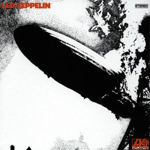

Bem Vindo, ( Login )

LED ZEPPELIN
Banda: Led Zeppelin
Ano de lançamento: 20/09/2009
Gênero: Hard Rock
Descrição: Led Zeppelin é o álbum de estreia da banda britânica de rock Led Zeppelin. Foi gravado em outubro de 1968 no Olympic Studios, em Londres, e lançado pela Atlantic Records em 13 de janeiro de 1969, nos Estados Unidos. Produzido por todos os quatro integrantes do grupo — especialmente pelo guitarrista Jimmy Page —, estabeleceu a difusão entre o blues e o rock. Muitas canções deste disco, tais como "Dazed and Confused", "Communication Breakdown" e "How Many More Times", apresentam um som pesado atípico na época de seu lançamento. A banda também criou um grande número de seguidores e devotados, com suas próprias canções de hard rock e som agradável; para eles uma parte da contracultura em ambos os lados do Atlântico.
Em outubro de 1968, Jimmy Page mudou o nome de sua banda, chamada The New Yardbirds, para Led Zeppelin. Os New Yardbirds surgiram da antiga The Yardbirds, e excursionaram na Escandinávia para cumprir obrigações contratuais. Pouco tempo depois, foram até o Olympic Studios para produzir seu primeiro disco. As músicas foram gravadas ao vivo e apresentadas à Atlantic Records, gravadora na qual conseguiram um contrato com ampla liberdade artística. Projetado pelo próprio guitarrista e pelo engenheiro de som Glyn Johns, o trabalho exibia um som distintamente pesado, algo incomum no final dos anos 1960. Devido sua capa, originalmente concebida por George Hardie, cuja imagem apresenta um dirigível Zepelim pairando nas nuvens em chamas, os membros tiveram problemas e foram obrigados a mudar brevemente o nome do grupo, além de serem ameaçados legalmente.
Embora, inicialmente, o projeto tenha sido recebido negativamente pela crítica, foi muito bem sucedido comercialmente e, ao longo dos anos, passou a ser aclamado mundialmente, sendo considerado um dos maiores álbuns de todos os tempos. Foi lançado antecipadamente nos Estados Unidos para promover a primeira turnê da banda no país, com suas primeiras apresentações em Denver, Seattle e Portland. Em 2003, foi classificado na 29ª colocação na Lista dos 500 melhores álbuns de sempre da revista Rolling Stone. Aparece também na lista dos 200 álbuns definitivos no Rock and Roll Hall of Fame. Em 2004, foi nomeado para o Grammy Hall of Fame e, em 2014, relançado como disco remasterizado, com faixas inéditas inclusas.
Faixas: 1. Good Times Bad Times (2:46) 2. Babe I'm Gonna Leave You (6:42) 3. You Shook Me (6:28) 4. Dazed and Confused (6:26) 5. Your Time Is Gonna Come (4:14) 6. Black Mountain Side (2:05) 7. Communication Breakdown (2:27) 8. I Can't Quit You Baby (4:42) 9. How Many More Times (8:28)